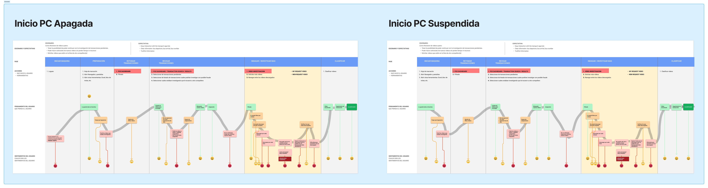
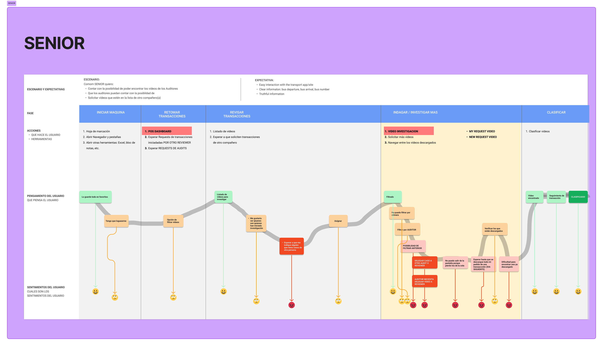
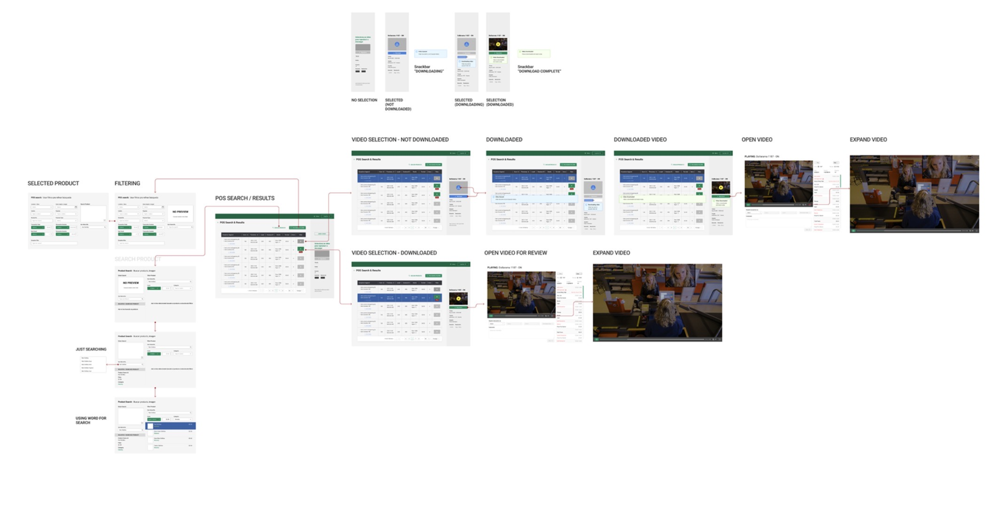
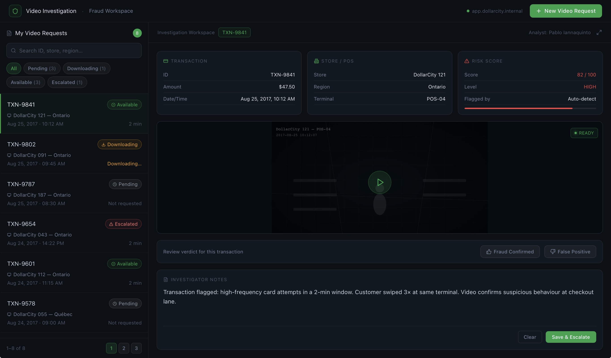

DollarCity
× Dollarama
Redesigning a fraud surveillance SaaS for retail chains across Canada and LATAM — cutting task time in half through contextual research, persona definition, and validated interaction patterns.
The system they were handed
Reviewers at DollarCity and Dollarama were navigating a fraud surveillance SaaS that required 3–4 browser tabs simultaneously to cross-reference video footage with POS transaction data — with no download state feedback, no role differentiation, and critical filters buried behind secondary panels.
What changed
What we set out to learn
Methodology, users, and findings
Primary Research
Contextual inquiry and moderated Useberry testing embedded with telemarketer users during live fraud review sessions across LATAM and Canada.
Secondary Research
Heuristic audit of the existing SaaS against Nielsen's 10 heuristics, surfacing 18 friction points and informing stakeholder scope alignment.
| User Type | Primary Task | Key Pain | Video | POS |
|---|---|---|---|---|
| Telemarketer | Review video clips tied to transactions | Too many tabs, no unified view | ✓ | ✓ |
| Supervisor | Manage queues and escalations | No status visibility across team | ✓ | |
| IT Admin | Configure integrations | Fragmented data sources | ✓ | |
| Analyst | Export and report on fraud data | Manual correlation of video + transaction | ✓ | ✓ |
- Detail-oriented — notices inconsistencies others miss in video footage
- Routine-driven — relies on predictable workflows to stay efficient
- Not comfortable with new technology unless it's clearly intuitive
- Daily routines and schedules
- Social media (Instagram, TikTok)
- Spending time with family
- Coworkers and team leads
- Direct supervisor feedback
- Brand loyalty and familiarity
- Complete daily tasks without errors
- Avoid re-work and corrections
- Get recognition from supervisor
- Clear, predictable interface
- Fast page loads between tasks
- Minimal clicks per review
- Job security and stability
- Praise from supervisor
- Finishing tasks ahead of schedule
- Confusing multi-tab workflow
- No feedback on video download status
- Filters hidden — too many missed reviews
Reviewer

Senior Reviewer

5 Friction Patterns
Contextual inquiry revealed consistent breakdowns across all user types.
- No date range filter visible — users scrolled through hundreds of rows
- POS terminal ID required manual entry with no autocomplete
- "My Requests" was not the default view, forcing extra navigation every session
- No way to filter by download completion status — all states mixed together
- Videos could not be sorted by review date or assignee
- Expanding a video to full player required multiple clicks across screens
Three-Pillar Solution Framework
Validated through Useberry sessions before committing to high-fidelity.
- Store/branch, POS terminal, date range, transaction amount filters surfaced at top level
- Sticky filter panel on scroll — never buried again
- "My Video Requests" set as default landing view for reviewers
- Breadcrumb trail + supervisor global toggle via role-based switch
- Flag as reviewed, suspicious, or priority — with bulk tag selection
- Tags export automatically with fraud reports
Key Flows
Low-fidelity flows validated before high-fidelity production.


Three decisions that shaped the outcome
Kept POS search, video filter, and playback on one scrollable panel. Eliminated tab-switching that caused 60%+ of task friction in baseline testing. Users went from 3–4 open tabs to a single unified view without losing any functionality.
Introduced 4 explicit video states — Not Downloaded → Downloading → Downloaded → Playing — with visual badges and a toast confirmation. Users could now trust the queue without polling, reducing duplicate requests to near zero in testing.
Surfaced the user's own request queue as the landing state of Video Investigation. Supervisors accessed a secondary global view via role-based toggle. This single decision accounted for the largest drop in time-to-first-action across all user types.
Explore the redesigned flows
